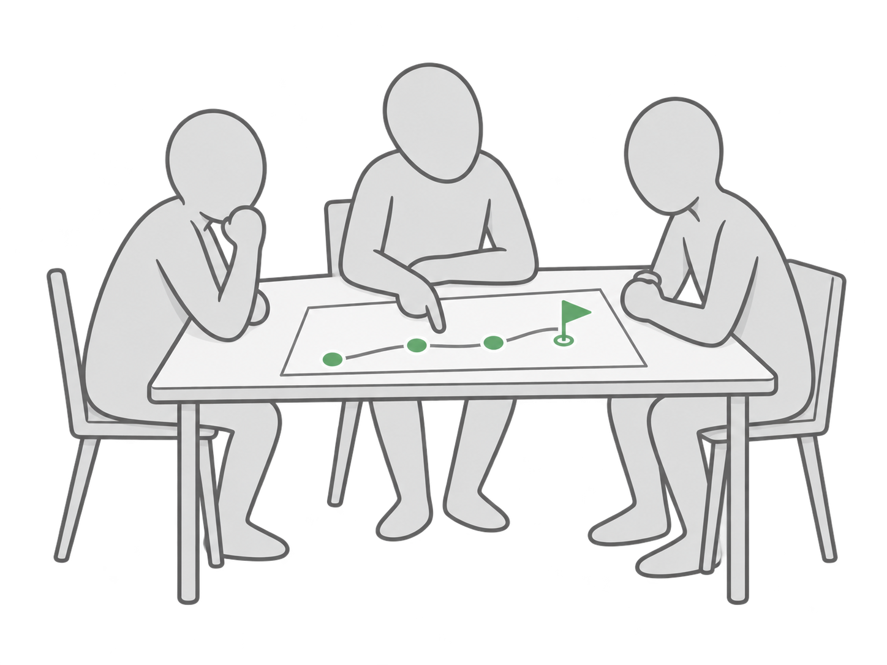

1Last Month's Action
- What was it?
- Did you complete it?
- Did it achieve its measure of success?
- What did you learn?
Friday, November 13 · 11 AM to 3 PM · Virtual

How are you feeling right now?
Give yours for the month, quarter and year
| Forecast | Actual | On track? | |
|---|---|---|---|
| Revenue | $? | $? | Y / N |
| Cash | $? | $? | Y / N |
| Widget (X) | #? | #? | Y / N |
Your forecast runs through: month and year
1Present · 4 min
2Group · 5 min
Share from your experience, not advice. Use "I" and "did", not "you" and "should".
3Coach · 5 min
Clarifying questions and direct feedback.
4You · 1 min
What are your key takeaways?
Your next action, made SMARTSpecific. Measurable. Achievable. Realistic. Time-bound: a date.
Break
Each level is built from the one above it and directs the one below.
| Level | What it holds |
|---|---|
| BHAGBig Hairy Audacious Goal10 to 30 years |
|
| 3HAGThree-Year Highly Achievable Goal3 years |
|
| 1HAGOne-Year Highly Achievable GoalThis year |
|
| QHAGQuarterly Highly Achievable GoalNext quarter |
|
| 13-Week Sprint LanesWeek by week |
|
1You
Share your screen. Walk us through it level by level, BHAG to sprint lanes.
2You
3Group
Feedback from the group on your plan.
4Coach
Clarifying questions and direct feedback.
Victoria · Build X Design

BHAG to sprint lanes, based on today's feedback
Including how far along each deliverable in your sprint lanes is
5 words or less.
How do you feel right now?